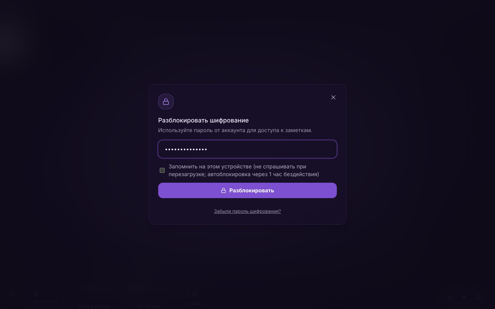
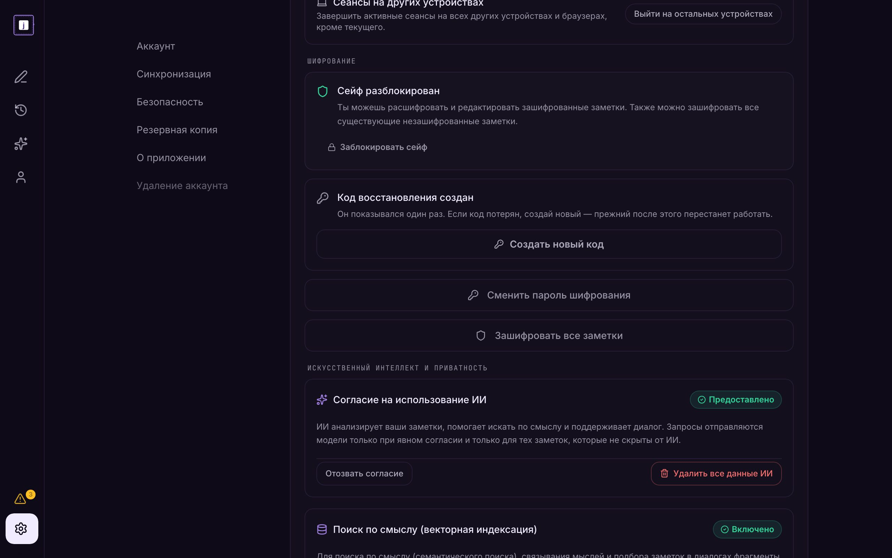
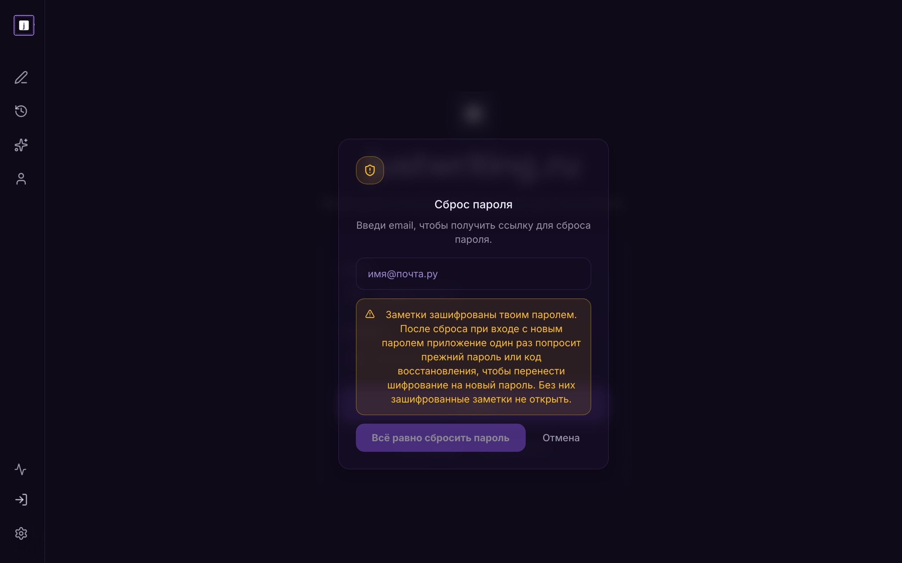
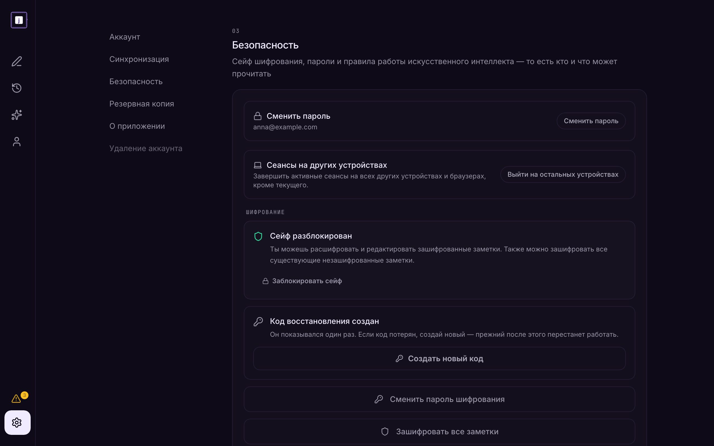
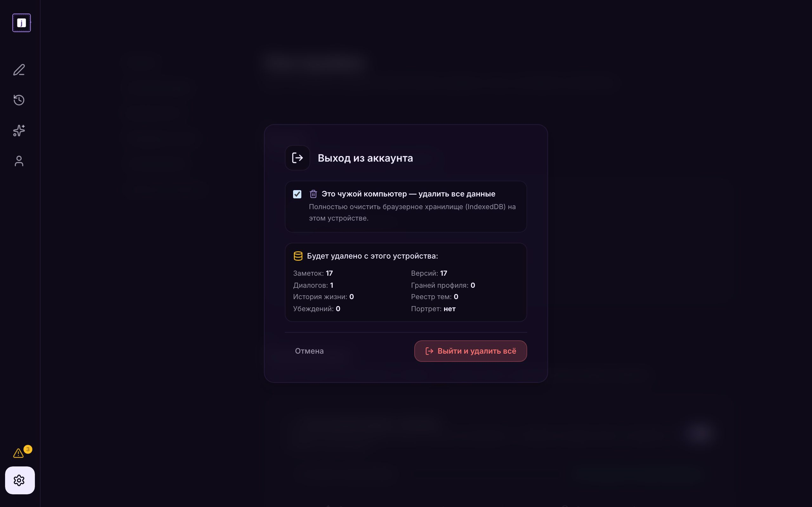

Пароли и шифрование
Ваши заметки в облаке зашифрованы, и ключ от них есть только у вас. Здесь — как один пароль открывает и аккаунт, и заметки, зачем нужен код восстановления и что делать, если пароль забыт.
Один пароль простыми словами
Пароль от аккаунта — он же ключ от сейфа. Им вы входите в аккаунт, и им же открываются заметки. Сейфом в приложении называется шифрование ваших записей: в облаке они лежат в зашифрованном виде, и без ключа их не прочитать никому, в том числе нам.
При первом входе сейф создаётся сам, из пароля вашего аккаунта. Отдельного пароля шифрования нет: если приложение просит пароль, чтобы открыть заметки, введите тот, с которым входите.
Код восстановления
Код восстановления — запасной ключ от сейфа. Он пригодится, если вы забудете пароль. Выглядит как шесть групп по четыре знака: XXXX-XXXX-XXXX-XXXX-XXXX-XXXX.
Сразу после того как сейф создан, поверх экрана появится окно Код восстановления. Код показывается один раз.
- Нажмите Скопировать код и вставьте его в менеджер паролей или в надёжную заметку вне приложения. Или нажмите Сохранить в файл (.txt) и уберите файл в надёжное место. Можно и просто переписать на бумагу.
- Отметьте галочку «Я сохранил(а) код восстановления в надёжном месте».
- Нажмите Продолжить. Пока галочка не стоит, кнопка не нажимается.
Если код потерялся, создайте новый в Настройки → Безопасность → Шифрование кнопкой Создать новый код. Приложение переспросит — Заменить код восстановления? — нажмите Да, создать новый. Старый код сразу перестанет работать: если он записан на бумаге или в файле, эту запись можно выбросить.
Разблокировка
Чтобы показать зашифрованные заметки, сейф нужно открыть паролем от аккаунта. Когда сейф заперт, приложение само покажет окно Разблокировать шифрование.

- Введите пароль от аккаунта — тот, с которым входите. Окно так и подскажет: «Используйте пароль от аккаунта для доступа к заметкам.»
- Если это ваш личный компьютер, отметьте Запомнить на этом устройстве. Тогда после перезагрузки страницы пароль спрашивать не будут.
- Нажмите Разблокировать.
Если пароль не подошёл, а пароль аккаунта недавно сбрасывали через почту, введите прежний пароль — окно подскажет об этом само. Прежний пароль не помните — нажмите Не помню прежний пароль — ввести код восстановления (см. ниже).
Окно можно закрыть крестиком и открыть сейф позже: в Настройки → Безопасность → Шифрование введите пароль и нажмите Разблокировать сейф.
Когда сейф запирается сам
- через 15 минут, если вы ничего не нажимали и не печатали;
- через 1 час бездействия, если отмечено Запомнить на этом устройстве;
- когда вы закрываете вкладку. С отметкой «Запомнить» при следующем открытии сейф откроется сам.
Что видно, пока сейф заперт
- зашифрованные заметки показываются с замком и надписью Заметка заперта. Их нельзя открыть, изменить или экспортировать;
- вместо названий меток видно «…»;
- разбор ИИ не отправляется в облако, пока сейф не откроют.
Ничего не пропало: откройте сейф, и всё вернётся на место.
Настройки → Безопасность → «Шифрование»
Здесь видно, в каком состоянии сейф, и собраны все действия с ним.

| Что написано | Что это значит |
|---|---|
| Сейф разблокирован | Сейф открыт, заметки читаются. Ниже — кнопки для работы с сейфом. |
| Шифрование заблокировано | Сейф заперт. Введите пароль от аккаунта в поле Пароль и нажмите Разблокировать сейф. |
| Шифрование не настроено | Сейфа ещё нет. Введите пароль от аккаунта, повторите его и нажмите Включить шифрование. Другой пароль не подойдёт: приложение скажет «Это не пароль от аккаунта. Введите тот, с которым входите.» Существующие заметки зашифруются, а потом появится окно с кодом восстановления. |
Кнопки при открытом сейфе:
- Заблокировать сейф — сразу запирает сейф. Заодно отменяется «Запомнить на этом устройстве». Удобно, если вы отходите от чужого компьютера.
- Создать код восстановления — если кода ещё нет, рядом будет предупреждение Код восстановления не создан. Приложение может попросить пароль от аккаунта: введите его и нажмите Подтвердить и создать.
- Создать новый код — если код уже есть. Старый перестанет работать, см. Код восстановления.
- Зашифровать все заметки — шифрует заметки, которые почему-то ещё хранятся без шифрования. Идёт с полоской прогресса, его можно отменить. Если заметок очень много, работа может остановиться на дневном лимите и продолжиться на следующий день с того же места.
Код восстановления вместо пароля
Если сейф не открывается ни нынешним, ни прежним паролем, понадобится код восстановления.
- В окне Разблокировать шифрование нажмите Не помню прежний пароль — ввести код восстановления. Откроется Восстановление доступа.
- Введите код восстановления.
- Введите новый пароль (не короче 8 символов) и повторите его. Проще всего — тот, с которым вы сейчас входите.
- Нажмите Восстановить доступ. Появится Доступ восстановлен, пароль обновлён, и сейф откроется.
Этот пароль станет паролем и для входа, и для заметок. Если код не подошёл, приложение скажет Код не подошёл — проверьте, тот ли это код: после создания нового старый не работает. Вернуться к вводу пароля можно ссылкой Войти по паролю.
Сразу после восстановления создайте новый код в настройках шифрования и сохраните его.
Забыли пароль входа

- На странице входа нажмите Забыли пароль? Откроется окно Сброс пароля.
- Прочитайте предупреждение: заметки зашифрованы вашим паролем, и после сброса приложение один раз попросит прежний пароль или код восстановления.
- Введите e-mail и нажмите Всё равно сбросить пароль.
- Появится Письмо отправлено на … Проверьте спам. Если письмо не пришло, через 60 секунд станет доступна кнопка Отправить ещё раз. Если адрес указан с ошибкой, нажмите Другой адрес.
- Откройте ссылку из письма. Откроется страница Восстановление пароля.
- Введите новый пароль (не короче 8 символов), повторите его и нажмите Сменить пароль.
- Появится Пароль изменён. Войдите с новым паролем. Нажмите Перейти ко входу и войдите заново.
Если страница пишет «Ссылка уже использована или устарела — запросите новую», начните сначала: запросите новое письмо.
Сменить пароль в настройках

Если вы помните текущий пароль, сменить его можно в Настройки → Безопасность → Сменить пароль. Введите Текущий пароль, затем Новый пароль — не короче 8 символов — и нажмите Сменить пароль. Появится Пароль успешно изменён. Новый пароль сразу работает и для входа, и для заметок.
Главное правило одно: помните свой пароль и держите под рукой код восстановления.
Сеансы на других устройствах
Если вы входили в аккаунт на чужом компьютере и забыли выйти, откройте Настройки → Безопасность → Сеансы на других устройствах и нажмите Выйти на остальных устройствах. Вход завершится везде, кроме устройства, на котором вы это нажали. Появится Сеансы на остальных устройствах завершены.
Выход из аккаунта
Кнопка Выйти находится в Настройки → Аккаунт. В меню слева её нет.

Обычный выход ничего не удаляет: Локальные записи сохраняются. Заметки остаются в браузере на этом устройстве, сейф запирается, и при следующем входе понадобится пароль.
Если это чужой или общий компьютер, отметьте Это чужой компьютер — удалить все данные. Окно покажет, что именно будет удалено с устройства: заметки, версии, диалоги и другие данные. Кнопка сменится на Выйти и удалить всё. Удаляются только данные вашего аккаунта, тема и язык остаются.
Удаление аккаунта
- Откройте Настройки → Удаление аккаунта.
- Нажмите Удалить аккаунт навсегда.
- В окне Удалить аккаунт безвозвратно? нажмите Удалить.
- Введите пароль от аккаунта и нажмите Удалить безвозвратно.
Если пароль неверный, появится Неверный пароль. и ничего не удалится. После удаления появится Аккаунт удалён, и вы окажетесь на странице входа.